01. Overview
Problem Statement
This project was the class project for Psychological Research Methods in Georgia Tech. The general topic we received was to improve the user experience in the retail business. Our team picked gaming mice as the product we would focus on. Then we started to design and conduct research to explore this field.
Informed by our divergent and convergent research processes, we want to solve the problem of how to improve the buying experience of gaming mice in BestBuy's brick and mortar stores through omnichannel experience design. We wanted to help our target users who stuggled with:
- Poor selection of gaming mice and lack of related information in brick and mortar stores.
- Lack of interaction with the mice in the display area and being unable to test them in real games.
Process
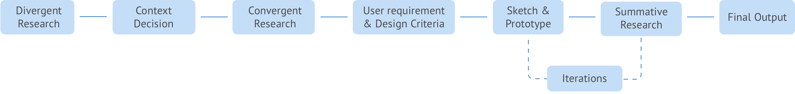My Role
1.In the divergent research part, we split the work and contribute to all the research almost equally. We did the field observation together. I finished the online walkthrough and decomposition of Logitech's website. I also helped with the distribution of survey and completed two interviews.
2.In the convergent research part, I conducted contextual inquiry and helped with the distribution of survey. I also created the user journeys.
3.In the design iteration, we worked together in the ideation, sketch and wireframe phases. When it came to prototype, I finished more than half of the hifi screens. After the project was over, I completed another iteration based on the feedback from users. I also contributed a lot to the cognitive walkthrough and benchmarking test both as the facilitator and the notetaker.
Duration
Sep. 2017 - Dec. 2017
Project Team
Huaiwei Sun | David Lacy | Nikhila Nyapathy | Sarah Brooks
Tools
Pen | Paper | Sketch | JustinMind | inVision
02. DIVERGENT RESEARCH
Resaerch Plan
Research goals:
1. Learnt about different contexts where users bought gaming mice.
2. Discovered significant issues or potentials in each context.
3. Compared different contexts and made a decision on which context to focus on in the following process.
Selection of Methods and Justification:
1. Field Observation - We visited a BestBuy store and a Target store. We observed the spatial layout of the store, the shelves for gaming mice and how users interacted with the environment. This method helped us discover some existing pain points in brick and mortar stores.
2. Online Store Walk-through & Task Analyses - We walked through the main online shopping platforms and conducted task analyses of buying a gaming mouse. This method helped us learn more about the buying process online and capture some existing pain points there.
3. Website Decomposition - We decomposed Logitech's website to learn about the basic components and flows for a online store.(We didn't choose Amazon or BestBuy because they were too complicated and had so many irrelevant parts).
4. Survey - We wanted to learn more about user's past experience of buying gaming mice at a large scale. So we created the survey and sent it to different gaming communities to quickly get responses and insights we needed.
5. Semi-structured Interviews - We wanted to learn more about people's past experiences within different retail contexts and more in-depth data like whys behind their behavior and thoughts. So we recruited 7 people who had prior buying experience of gaming mice and had 30-minute semi-structured interviews with them.
Field Observation
During our observation in BestBuy and Target, we found a lot of issues, including:
- Limited selections and information.
- Restrictions to the display area and lack of interaction between customers and the gaming mice.
- Lack of information of the price matching policy.
- Accessibility issues caused by the high shelves.
Online Store Walk-through & Task Analyses
After the field observation, we studied 3 online stores(BestBuy.com, Amazon.com, Logitech.com) and conducted task analyses of buying a gaming mouse in each store. Following is our HTA chart for BestBuy.com.
The biggest pain point here was that people couldn't not touch and play with the gaming mice online when ergonomics were important.
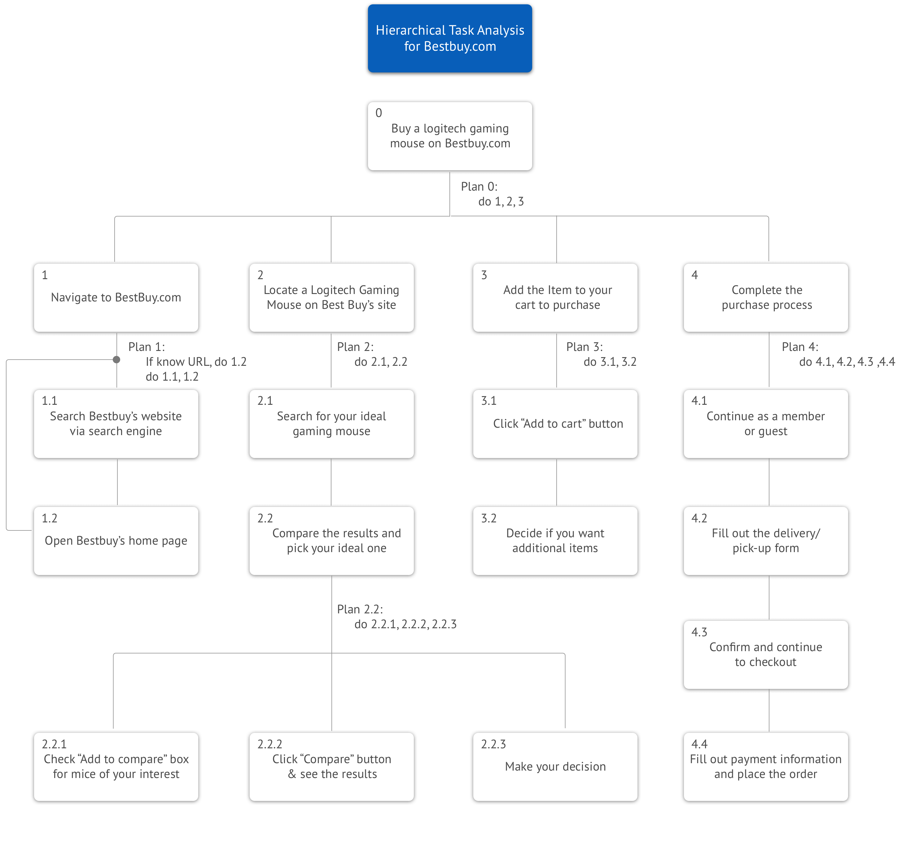Website Decomposition
We decomposed Logitech's website to visualize the complex structure to further understand how pain points could arise from bad information architecture and function designs. The insights we found included:
- The basic features for a online store included: List of products, Search, Compare, Product Details, Cart and Check out systems.
- The brand Logitech G had an independent website which may confuse users when they missed it.
- Prices of some products provided by other retailers like BestBuy were much cheaper than those on Logitech Website.
- There was a lack of reviews from users for all the products.
Survey
After the investigation on both online and offline channels, we wanted to compare them at a large scale. We used survey to let users rate their buying experiences and explain why they had a good/bad experience.
- The overall result showed that the satisfaction rates of physical stores were lower than those of online stores.
- The main pain point for online stores was that people could not try the mice.
- The main pain point for physical stores was the limited selection.
Semi-structured Interviews
With broad data gathered, we wanted to go deeper and learnt more about users' prior buying experiences of gaming mice. We conducted 7 semi-structured interviews to ask about participants' experiences and probe whys behind their behavior.
We used affinity diagram to analyze the data collected here.
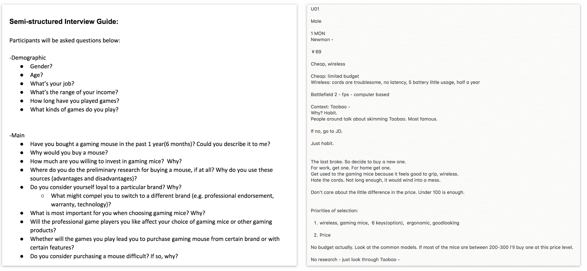Affinity Diagram
We had a note briefing session immediately after finishing the interviews. Then we used affinity diagram to categorize the notes we had and extracted the patterns of the purchase of gaming mice. The main patterns included:
- Technical features and ergonomics were very important to users.
- Being able to try and feel the mice and the convenience of ordering online were in conflict.
- In-depth research was necessary to our users.
- Users wanted to get good deals within their budget.
Comparisons of contexts
Based on the data we collected from methods above, we conducted a comparative analysis to show the strengths and weaknesses of different modes of purchase.

Decision of Context
After a long team discussion, we finally decided that we focused on how to improve the buying experience of gaming mice in BestBuy's brick and mortar stores through omnichannel experience design. Thus BestBuy physical store was our main target context.

03. CONVERGENT RESEARCH
Resaerch Plan
Research goals:
1. Learnt more about BestBuy contexts and users who would potentially visit there to buy gaming mice.
2. Researched and analyzed the entire process a user follows, before they visited the store, while in the store and after making a purchase.
3. Generated the user requirements and design criteria for the following design phase.
Selection of Methods and Justification:
1. Survey - We had a very short survey for people who had in-store purchase experience of gaming mice in BestBuy. It was focused on issues users had experienced during in-store puchase and attributes of gaming mice they thought were important. We also collected demographic data about these participants for making personas and user journeys.
2. Contexual Inquiry - Where observations were too vague and surveys couldn’t give us in-depth details and enough whys behind the behavior, contextual inquiries could provide a better understanding of the user’s behavior within the context. With the help of participants, we could confirm all the touchpoints, emotional changes and potential issues within the BestBuy in-store context.
3. Semi-structured Interview - To gain a secondary perspective from a product expert who might elicit useful information on the problem space and other obstacles unbeknownst to the end-users or other designers, a semi-structured interview made sense as it allowed us to follow a guide but at the same time allowed the expert to give their input as it would bring up points which we probably would not be aware of.
Survey
First, we wanted to study the general purchase experiences of users in BestBuy's physical stores. Thus we used the survey and collected 114 valid responses from people who had bought gaming mice in BestBuy stores before.
They rated the significance level of the pain points and the importance of different attributes of gaming mice in the survey.
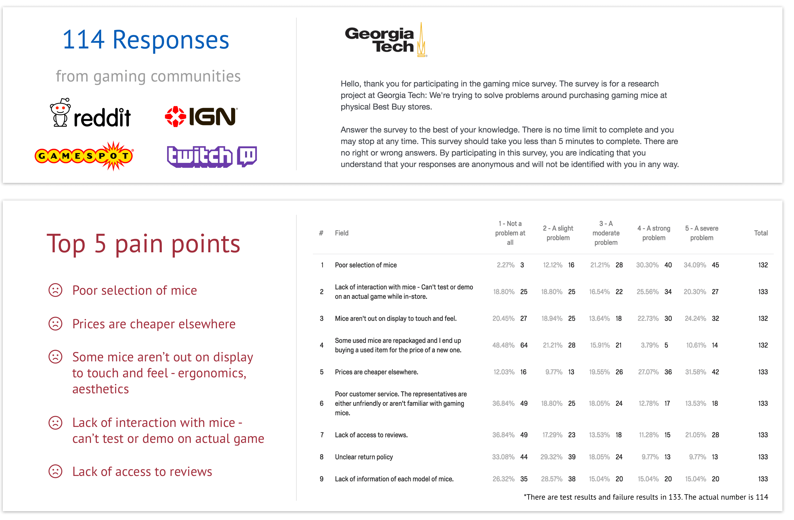Contextual Inquiry
Then we delved deeper to collect some qualitative data. We conducted one contextual inquiry and two retrospective accounts of buying experiences in BestBuy.
We observed and listened to how participants interacted with the context and asked questions based on it. We confirmed all the good points and pain points with the participants and probed the reasons behind them. We took the notes of these findings for the later analysis.
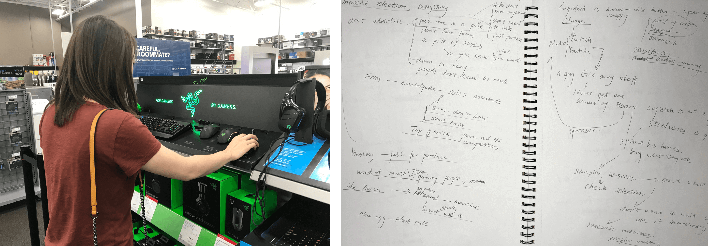Semi-structured Interview
We also wanted the perspectives from the experts in BestBuy as a part of input. So we made appointment with an employee in BestBuy who had knowledge in the gaming department. The expert we interviewed was an Alienware specialist who was knowledgeable in gaming mice.
We especially wanted to know if there were some restrictions on the clients who stocked their brands in store, and if so what they were. For example: are there limitations on what the client (eg: Logitech) can/cannot do in the store? Main questions are listed below.
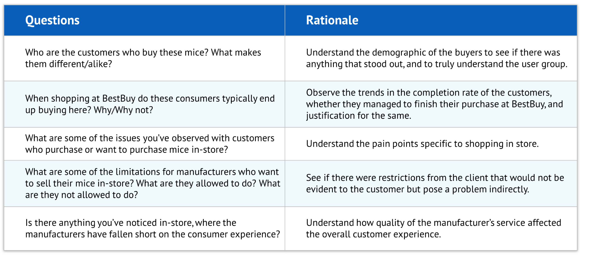Affinity Diagram
We aggregated all the notes we collected from contextual inquiries and interviews and used affinity diagram to help us categorize all the insights we had. The main insights we distilled from the map included:
- Price may not be everthing for users since some of them cared more about the purchase experience they would get.
- Users mainly conducted research online, through online stores, gaming communities, streaming platforms and reviews.
- Important technical features included wired/wireless connection, programmable buttons, DPI setting, etc.
- The biggest advantage for in-store context was that users could try and test the products.
- However, BestBuy was not very knowledgable in the gaming field.
- It also had service issues in terms of their complicated processes of price matching policy in physical stores.
Personas & User Journeys
After collecting and analyzing all the data, we started to interprete them using different ways.
Firstly, based on the demographic data collected from survey and interviews, we concluded with two personas representing our typical users. Apart from personas, we described their buying experiences using journey maps.
Check the details of the personas and journey maps.
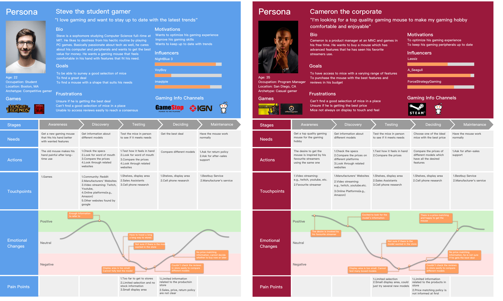Empathy Map
We also created two empathy maps to supplement the personas to help us better understand users' needs and guide us in the design phases.
Check the details of the empathy maps.
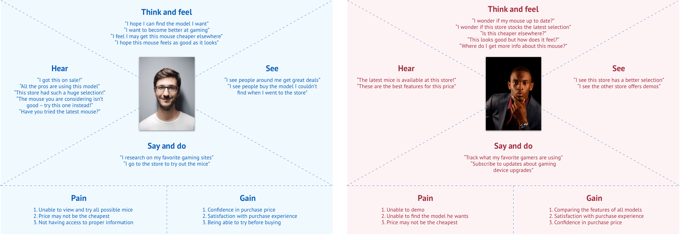User Requirements and Design Criteria
Finally, we combined all the insights we had and listed user requirements, design criteria and the priority in this table which would lead all the following design phases.
- First, we would ensure that our designs could meet the user requirements.
- Our designs also had to work in a proper way that users enjoyed, i.e, it needed to meet the design criteria.
- The priority would help us make design decisions when we were in design dilemmas.
04. DESIGN ITERATION
Brainstorming
Revolving around the user requirements, we tried to come up with as many ideas as possible, from very conservative ones to very innovative ones.
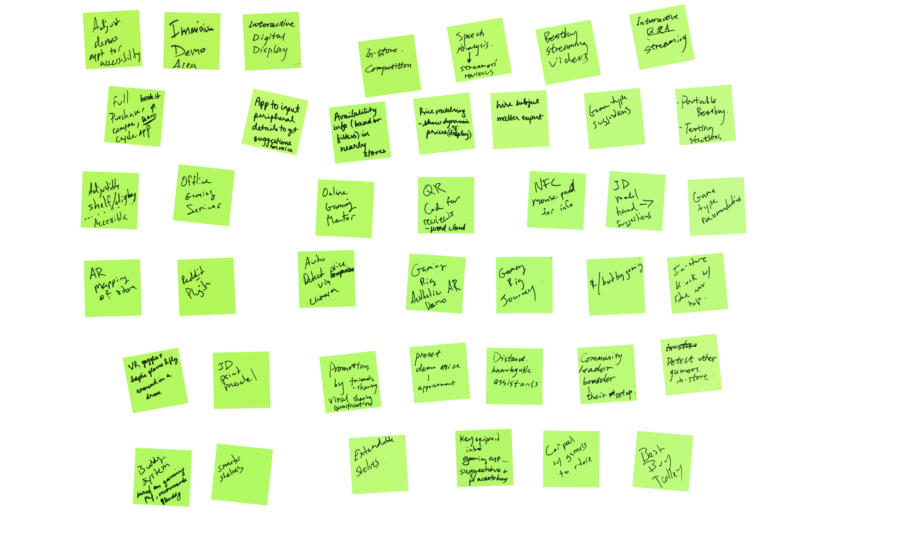Idea Evaluation
We evaluated all the ideas we got in the brainstorm session and used creativity-feasibility map to evaluate these ideas. We picked ideas with the highest potential in terms of creativity and feasibility.
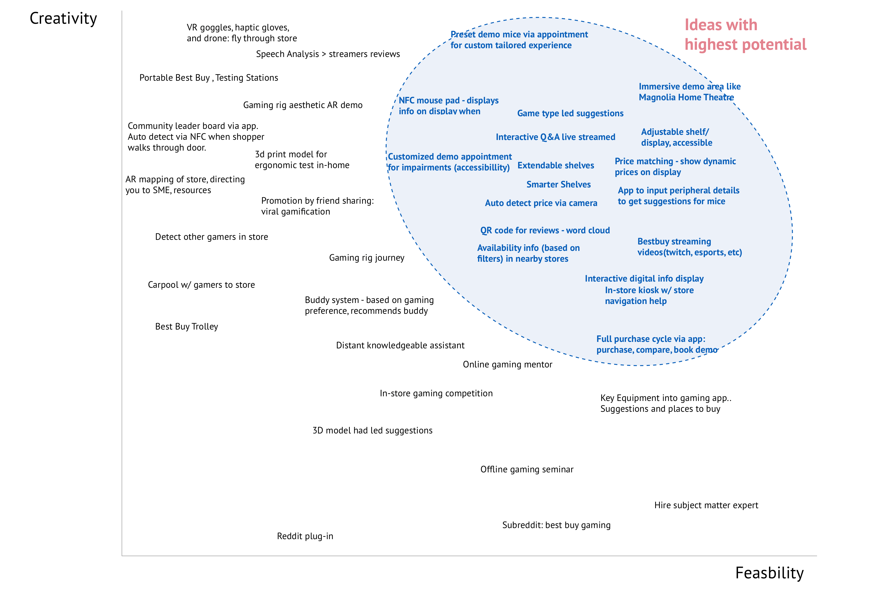Then we merged these ideas and eventually got four directions for us to explore in the sketch phase: Immersive Demo Area, Personalized Recommendation System, Price Matching System, Efficient Shopping Assistance System.
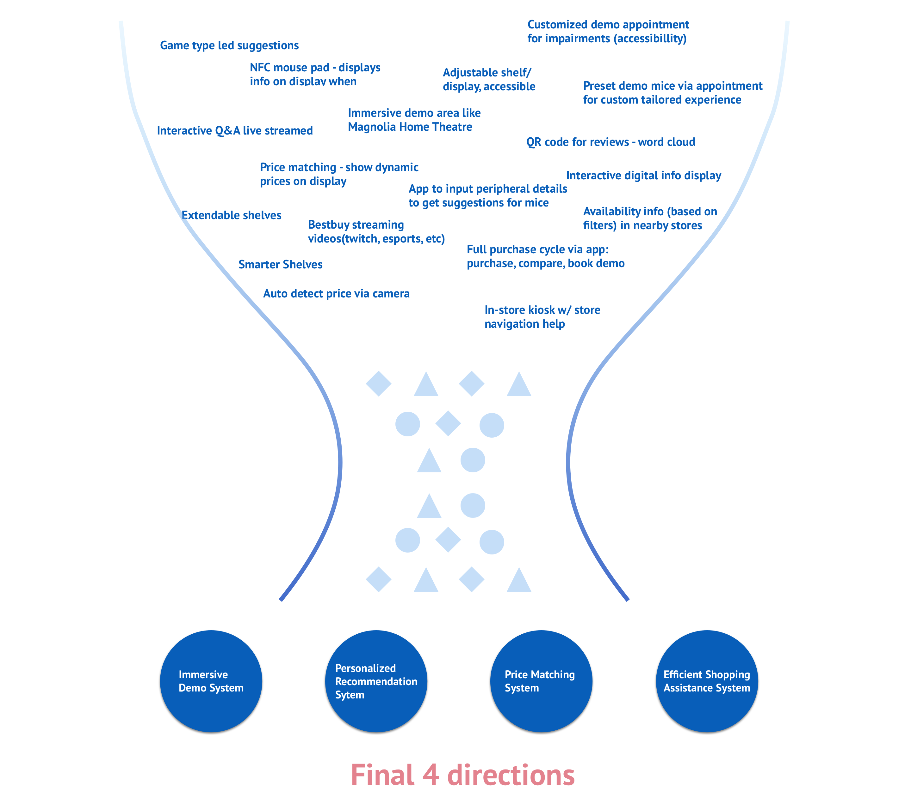Sketches
1. Immersive Demo Area
This system enables users to choose the devices they wanna try and book a demo slot online. Then all they need to do is go to the store to enjoy an immersive demo experience at the appointed time and make a confident purchase.
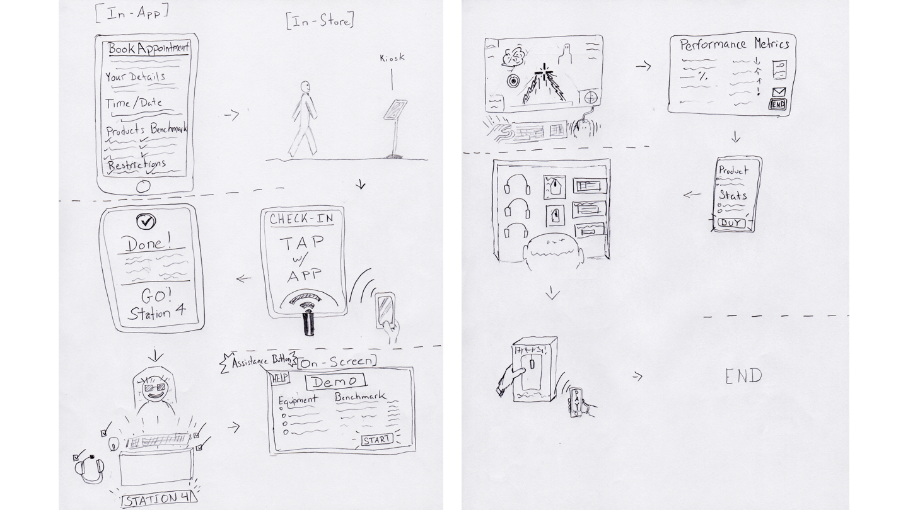2. Personalized Recommendation System
This system recommends devices to users based on their budgets and games. It also includes expert reviews and availability check in the nearby stores.
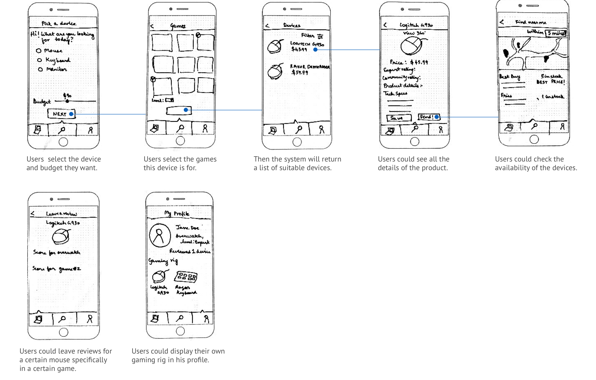3. Price Matching System
This system lets users scan the product to match the lowest price on the market and get a voucher by print or text messages. Users could show this voucher to the cashier when they check out.
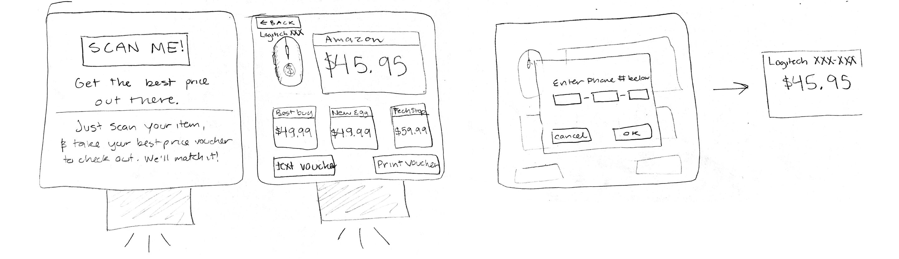4. Efficient Shopping Assistance System
This system works as an interactive streaming Q&A. Expert streamers could introduce new prodcuts, review existing products and of course answer users' questions related to a certain product here. Users could get instant help anywhere where they could connect to the internet.
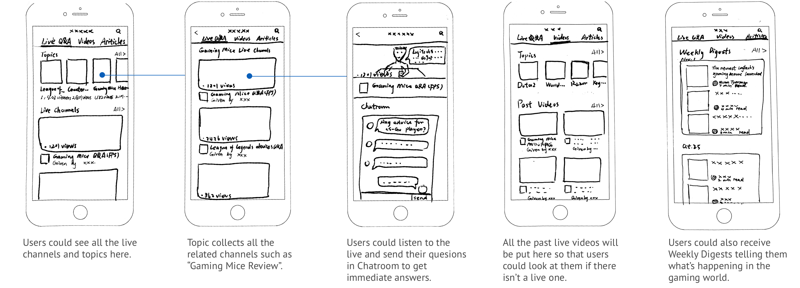Feedback Session for Sketches
In order to test the value and usefulness of these ideas to users, We carefully designed our feedback session and recruited 4 participants who had prior gaming experience to help us evaluate.
We used spreadsheets to compare the Pros, Cons and value of each idea. Finally two of the ideas stood out and we were going to merge them into one system in the prototype phase.
Prototype
The prototype is an add-on to the BestBuy’s website. It consists of two parts: survey module and appointment module. It’s intended to help users find their ideal devices easily and book an appointment to demo all the devices they want in the immersive demo area in physical BestBuy stores.
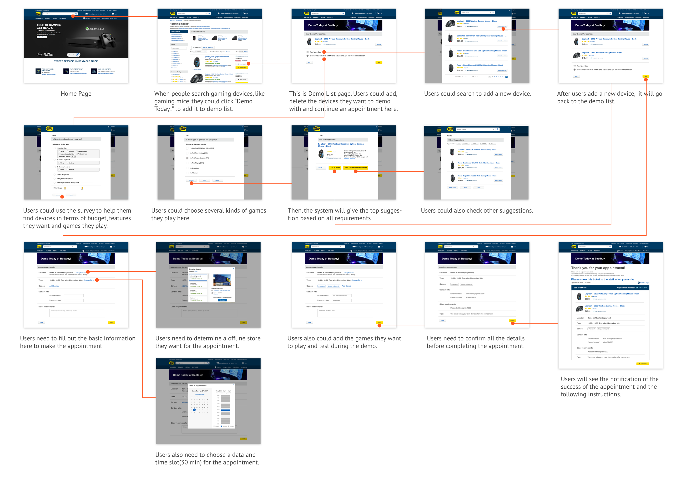Storyboard
To better illustrate and communicate the scenario to all the stakeholders where this prototype was used, we created the storyboard to describe the process of using this product.
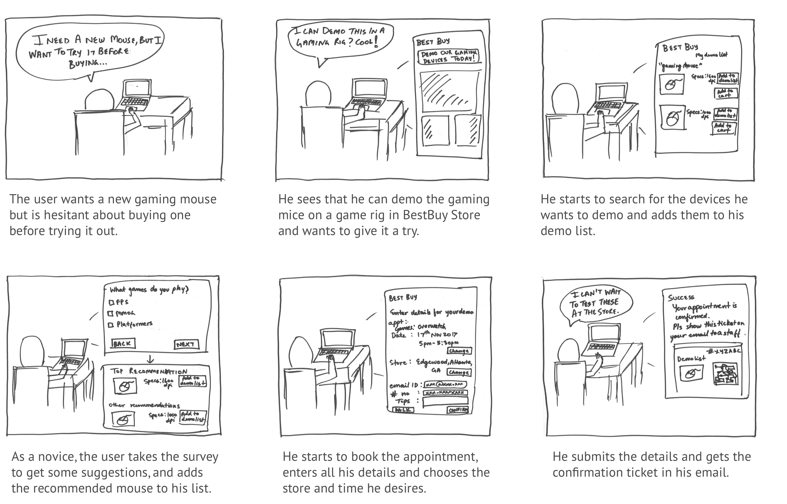Feedback Session for Prototype
In this phase we recruited 4 participants who had prior gaming experience to help us evaluate the flow of our prototype and further confirm the value of this idea.
Users generally thought this idea was useful especially if it was supplemented by a walk-in booking system. We also received many great suggestions in terms of the flow and other interaction details of our prototype, which guided our Prototype Iteration One.
Iteration One
1. Suvery System
2. Other iterations
Check the details of the Prototype Iteration One.
Usability test - Cognitive Walkthrough
After the first iteration, we wanted to further test the usability of the prototype. We recurited 5 experts who had experience in UX research to help us finish the cognitive walkthrough and give us feedback.
We received many useful suggestions from experts and used them to guide us in the Prototype Iteration Two. Some suggestions were not accpeted and we gave the justifications here.


Iteration Two
1. Survey - Budget Page
2. Other iterations
Check the details of the Prototype Iteration Two.
Usability Benchmarking Test
We had already evaluated the prototype amongst ourselves and experts. It was important to get users' opinions from our intended user group, i.e. student gamers and casual gamers in the corporate, to try it out and see if they found it usable. We recruited 5 participants from both schools and corporates who were gamers to help us evaluate the prototype.
The feedback was very positive. We got a 88.5 high SUS score. Users made few errors in the flow. These results indicated that our prototype had a high usability. We also received some suggestions. Based on them I conducted another interation after the project was over.
Final Design
This semester project finished after we conducted the benchmarking test. Based on the feedback from the benchmarking test, I iterated again and alterd a lot of design details myself.
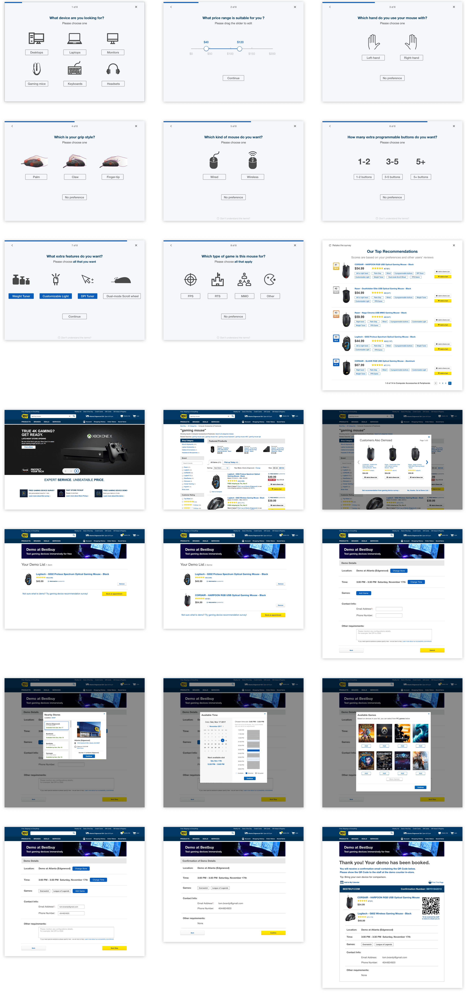Final Prototype
I also used inVision to recreate a prototype. Feel free to play with it and share your feedback with me.